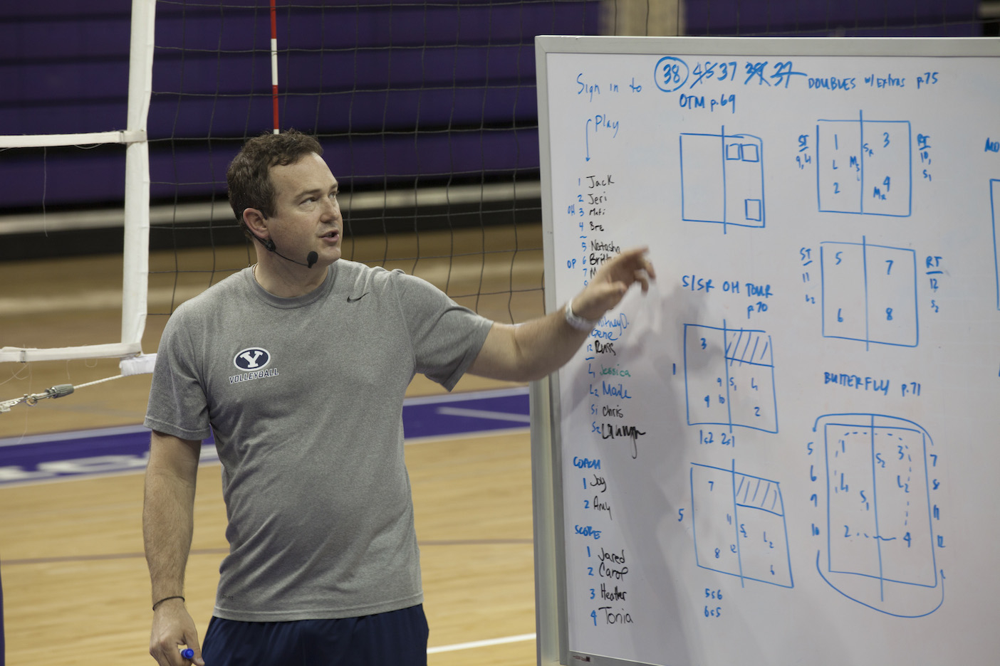

The project I am interested in working on is a Phone Application for volleyball coaching. The application will be used for coaches and potential athletes to increase the knowledge base of their training sessions and also provide an easy to access prepared training session in which the coach has personally created or can select from a database of customizable training templates.
The application will also further breakdown into training exercises, demonstrations of the training exercise, volleyball skill progressions with ques and key points to help coaches and athletes understand how to perform the skill/exercises.
To ease the user interface the application will also provide a filters for the user to select from which will allow them to access application drills and exercises that best fit's the user's needs.
With my history in the sport and current career path, Volleyball is important to my life and this application can help myself and others that are coaching volleyball within Australia. Volleyball is a sport that almost everyone in Australia has played or watched, whether it is down by the beach or in their years of high school, so every teacher, coach and player can benefit from a database of training at their fingertips. As a coach and athlete, one of the most important thing for learning volleyball has involved visual learning. I have countlessly watched and re-watched my volleyball games and also other high level athlete's footage in order to increase my own understand of skills. Not only has the footage helped but also the increased use of social media has provided me with information and training exercises that I have never seen whilst playing in Australia. With all these factors, this application will be something that is not available for Volleyball Coaches and can be a huge hit moving forward with the implementation of technology and coaching.
This application will be the first of it's kind and require a lot of work outside of the application's development. The Volleyball Coaching application will require an account that is either registered as a coach, athlete or both. Once the account has been created, the home page will contain quick easy one touch options such as:
This section will provide the user with a similar interface to the Create a training session, instead of having to select a variety of options, the user will be presented a database of warm up drills and exercises that are able to be filtered if desired.
In this section of the application, the user will be prompted to choose from a customizable template or create their own personal session. From this the user will be sent to a "clipboard" like interface that will prompt the user to chronologically select information such as the Gender, Age, Number of Athletes and Session Time. From this a table will show up with 3 or more rows that will allow the coach to start by filtering the skill whether it is warm up, attacking, blocking etc; next it will choose the amount of time you wish to spend on the drill and in the final table a list of filtered results will be selectable for the session slot.
Similarly to the warm up section, the interface will be exactly the same but provide the user with an interface of drills that can be filtered to find the desired skill based on determining factors of skill level etc.
Included in the touch options, filters will be available to limit data response for the application so that the user can easily access the required information without having to search for it manually. A "Favourite" option will be provided for coaches to save a drill that they find to be most useful and have it quickly accessible by selecting the Favourites Option.
Included in the touch options, filters will be available to limit data response for the application so that the user can easily access the required information without having to search for it manually. A "Favourite" option will be provided for coaches to save a drill that they find to be most useful and have it quickly accessible by selecting the Favourites Option. Provided with the Drills and Warm up, I will try and provide video demonstrations of the performed exercise, which in early stages will be publically sourced from Youtube and other social media sites that allow the use of their content. Each Individual exercise will have a description of the exercise, the number of athletes required, equipment required, skill level of the exercise, information of how it is performed, notes for coaches to keep an eye on in order to help the athlete's understand.
MIT App Inventor
Python
Youtube videos
Video Recorder / Cinematographer
Mit App Inventor
Origionally the application will start here as a base for understanding and also create a quick and easy to use interface for future models.
Python Coding
With experience in Python coding, the application will be constructed to meet my needs of the application, allowing for playable videos, hold and drag option for future upgrades to training sessions that can also allows users to hold the drill and a demonstration will pop up, requiring them not to leave the screen.
Video Recorder/ Cinemotographer
This will be important to create the database of drills and exercises.
Athletes for filming
Also needed in order to have people to perform the exercise. he app's creation will require a designer in creating a logo, and the imagery provided for the application, once created the information will be provided by myself. In the initial stages of the creation, exercises will be added one by one to ensure the highest quality of content. Once the skills are created, video recording of the drills will need to take place in order to make a sufficient database of the application's own content.
If successful the application will create an easy to navigate database of volleyball exercises and information for coaches and athletes to use when practicing and aid in making coaching easier whilst also help coaches further develop their skills and improve the progression of their athletes. The application's success can also see the addition of a "Create your own drill" option which allows coaches to add their own drills which (if approved) can be added to the application's database.